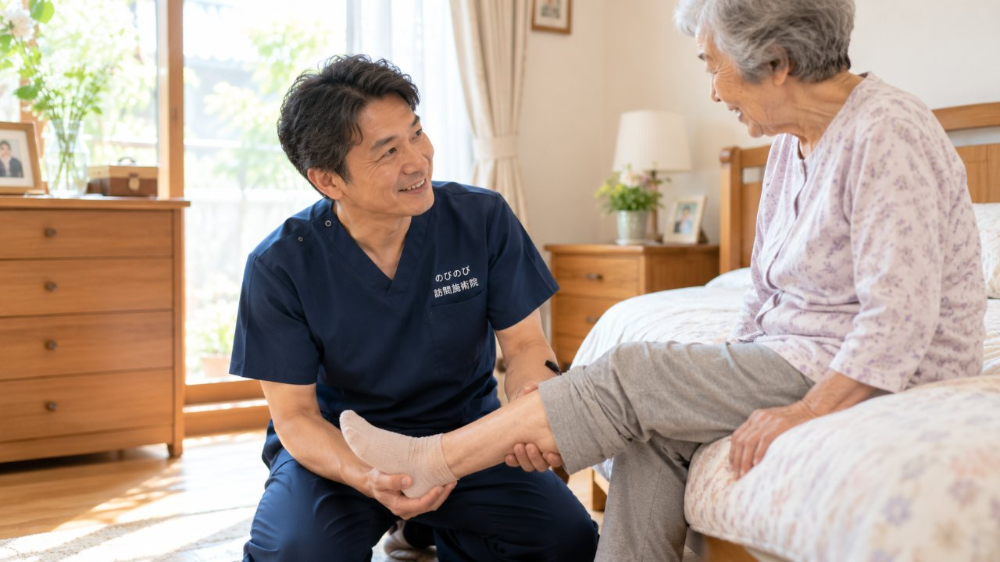

立ち上がるときにズキッとする、歩き始めの一歩がつらい、階段の下りがこわい。膝の痛みは、そのまま外出や通院の負担にもつながります。箕面市にお住まいで、加齢による変形性膝関節症などの膝の不調をかかえるご本人やご家族に向けて、訪問鍼灸マッサージに何ができて、何ができないのかを整理しました。原因の見きわめは整形外科の役割ですが、そこを土台にできる補助もあります。
結論から先に。膝の痛みの診断と治療は、まず整形外科などの医師が中心です。すり減った軟骨や進んだ変形は元には戻せず、効果には個人差もあります。そのうえで訪問鍼灸マッサージが担うのは、かばうことで固くなった膝まわりや太もも、お尻のこわばりを和らげ、めぐりを助ける補助の役割です。医師の同意があり通院がむずかしければ、はり・きゅうの医療保険が使えます。自己負担は1割の方で1回およそ395円（総額3,950円）です。
膝の痛みは、わずかな傾斜で気づくことがある
膝に痛みを抱える方にとって、平らに見える生活道路のわずかな傾斜が、実は一番こたえます。とくに下りは、一歩ごとに体重を膝で受け止めてブレーキをかけるため、太ももの前側と膝の内側に負担が集中しやすいのです。階段を下りるときや、玄関の一段を降りるときに強く出るという方もよくいらっしゃいます。
「駅までは行けても、帰りの下りが怖い」「遠回りして段差を避けている」。そんなお話を、訪問先でうかがうことがあります。まずはご自宅で、その膝がどう動いているかを一緒に確かめるところから始めます。
変形性膝関節症と、立ち座りのつらさ
膝の痛みの背景に多いのが、変形性膝関節症です。関節の軟骨が年月とともにすり減り、朝起きたときのこわばり、座った姿勢から立ち上がる瞬間のズキッとした痛み、階段の下りでのぐらつきといった形で現れます。腫れや熱っぽさが出たり、膝がまっすぐ伸びきらない・深く曲がらないといった可動域の制限を感じる方もめずらしくありません。立ち座りが億劫になる感覚については、膝の痛みで立ち座りがつらい方へのページでも詳しく触れています。
痛いから動かさない、動かさないから固まる。この繰り返しが、膝をさらに動きにくくしていきます。彩都や船場の新しい住宅で暮らす方も、萱野の昔からの街並みで暮らす方も、膝が抱える悩みの根っこは案外似ています。
外出が減ることで進む、廃用の悪循環
膝が痛むと、人はまず外出を控えます。北大阪急行が延伸して箕面萱野駅や箕面船場阪大前駅ができ、街に出る楽しみは増えたのに、痛みを理由に家にこもりがちになる。すると太ももの筋力が落ち、膝を支える力がさらに弱まって、また痛みやすくなる。これが廃用と呼ばれる悪循環です。筋肉は、使わない期間が続くほど早く衰えてしまいます。
私たちが大切にしているのは、痛みをやわらげることだけでなく、いま残っている膝の動きと筋力を保つ視点です。無理をしない形でマッサージや関節の運動、太ももを支える機能訓練を組み合わせ、「動ける膝」を維持していくことを目指します。ただし、これらは病気そのものを治すものではなく、効き方には個人差があることも、あらかじめお伝えしています。
膝の痛みは、医療保険の何で対応するのか
訪問での対応には、医療保険（療養費）と医師の同意書が必要です。医療保険のはり・きゅうの対象となるのは、神経痛・リウマチ・頸肩腕症候群・五十肩・腰痛症・頸椎捻挫後遺症の6疾病で、膝の痛みそのものはこの枠には含まれません。膝については、それにともなう腰や脚の痛みについて医師が施術を必要と認めた場合に、はり・きゅうで施術を組み立てていきます。要介護認定は不要で、介護保険の限度額とは別枠のため併用も可能です。制度全体の流れは、箕面市の訪問鍼灸マッサージもあわせてご覧ください。
なお、同一部位について医療保険のリハビリと鍼灸を同じ月に同時に算定することはできません。すでに通院リハビリを受けている場合は、部位や進め方を医師と相談しながら調整していきます。
料金と、箕面市内の対応について
1回の施術の総額は3,950円です。医療保険の自己負担は、1割の方で約395円が目安になります。週2回のペースなら、1割負担の方で月およそ3,160円です。機能訓練は含み、エリア内であれば出張費はかからず料金は一律です。これらについて別途の料金はいただきません。負担割合ごとの仕組みは料金はいくら？医療保険の自己負担額と仕組みで詳しくまとめています。
訪問の範囲は、箕面駅・牧落駅・桜井駅の沿線から、小野原・如意谷・粟生・彩都・船場・萱野の各地域まで幅広く伺っています。ご自宅がどこまで対象になるか気になる方は、対応エリアはどこまで来てもらえる？をご確認のうえ、まずはお気軽にご相談ください。
よくある質問
箕面市のどのあたりまで来てもらえますか？
箕面・牧落・桜井の周辺から、小野原、如意谷、粟生、彩都、船場、萱野など箕面市内を広くうかがっています。詳しい地域は、お問い合わせの際にご確認ください。エリア内であれば別途の出張費はかからず、どこでも同額です。
変形があると対象外になりますか？
いいえ。慢性的な膝の痛みに医師の同意があり、通院がむずかしい状態なら対象になります。すり減った軟骨や変形そのものが戻るわけではありませんが、まわりのこわばりを和らげる補助はできます。感じ方には個人差があります。
膝に水がたまっていても受けられますか？
水を抜くかどうかを含め、まず医師の判断が土台になります。まず整形外科にご相談ください。そのうえで、膝まわりや太もものこわばりを負担のない範囲でゆるめ、膝を支える力を保つお手伝いをします。
転倒後の膝の痛みも相談できますか？
強い痛み・腫れ・熱感・荷重できないといった状態であれば、整形外科の受診が先になります。骨や関節の中のトラブルが隠れていることがあるためです。医師の診断を受けたあとであれば、状態に合わせた補助を行えます。
費用はどのくらいですか？
ご自宅での1回の施術は総額3,950円、1割負担の方でおよそ395円が目安です。1割の方が週1回受ける場合、ひと月の自己負担はおよそ1,580円ほど。公的な医療保険にもとづく正規の料金です。手技や身体を動かす運動は、鍼灸に加えるケアとして行います。これらについて別途の料金はいただきません。
要介護認定を受けていなくても利用できますか？
はい。要介護認定は条件ではありません。はり・きゅうは医療保険のしくみで、医師が必要と認め通院が負担であれば利用できます。費用は介護保険の区分支給限度額とは別枠なので、ケアプランの上限には影響しません。
寝たきりや車いすでも受けられますか？
はい。ベッドや車いすの上など、その方の楽な姿勢に合わせて施術します。体勢や刺激の強さも体調に合わせて調整します。施設へうかがうこともできますので、ご担当者からのご相談も歓迎しています。
同意書などの手続きは自分で用意するのですか？
いいえ。保険を使うのに必要な医師の同意書は、のびのび訪問施術院が段取りをお手伝いします。かかりつけの医療機関をお聞かせいただければ、こちらで調整を進めますので、ご負担は少なく始められます。